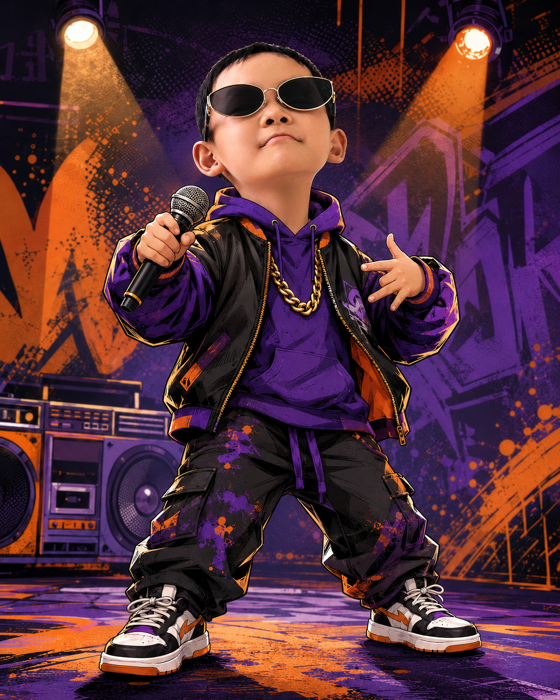

01 · 基础一拍一字
1234
今日任务 从跟读到自己的 TRACK
先跟着读，再自己填，最后完全自由创作。每完成一关，就升级一次。

LEON'S SESSION · LEVEL UP
今天不赶时间。一关一关，把别人的句子变成你的句子。
LEVEL 01 · FLOW CHECK
先听懂四个鼓点。最后一个重要词，尽量落在第 4 拍附近。
COMMON FLOW · 90 BPM
稳定鼓点配上明亮的电子合成器，稍微欢快一点。点击后直接起拍。
NUMBER FLOW
每一格是一拍。数字越多，嘴巴要分得越快。
先听背景 Flow，再从第 1 个节奏型开始
LEVEL 02 · COPY THE FLOW
选择一件事，系统立即载入对应的 4 句初级歌词。先把它完整读下来。
选择事件后，准备跟读
LEVEL 03 · FILL THE BAR
第一句已经替你放好。点击空格输入，也可以使用“给我灵感”。
ENDING LINE
LEVEL 04 · WRITE YOUR STORY
不再限制句式，只保留创作路线：事实、夸张、转折、收尾。
YOUR NEW LINE
系统会根据当前事件先放入一句，你可以直接修改。
MEMORABLE LINE
选择一种技巧，系统先示范；你可以继续修改。
LEVEL 05 · FINAL TRACK
五句话已经准备好。先读一遍，再开启麦克风。
RECORD YOUR TRACK
戴上耳机效果更好。录音只保存在当前设备。